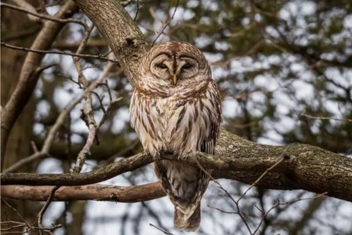

An extensive examination of 158 marked Barred Owls has shed light on their territorial behaviour, indicating a preference for small, non-migratory ranges spanning no more than 6 miles from their initial location.
Despite these limited territories, Barred Owls exhibit a widespread distribution, commonly observed across the eastern regions of the United States and southern areas of Canada. These remarkable birds are easily recognizable by their distinctive brownish-grey feathers, beautifully accentuated by dark stripes adorning their underparts.
This species, akin to American Barn Owls, displays a propensity for forming lifelong monogamous pairs during the mating season. Courtship rituals entail the male spreading its wings, patiently awaiting the female’s acceptance, typically occurring in the month of February. These devoted owls construct their nests within hollow tree trunks nestled in the heart of dense forests..
Barred Owls exhibit a diverse diet primarily centered around small mammals such as mice and voles, while also including smaller bird species, reptiles, and insects in their culinary repertoire. On occasion, they showcase their hunting prowess by targeting larger prey like rabbits and squirrels.
Leveraging their acute hearing, these opportunistic predators expertly locate their quarry in the vicinity of forest rivers and wetlands, and in times of scarcity, they demonstrate adaptability by scavenging for carrion.
With an estimated global population of 3 million, Barred Owls enjoy a widespread presence throughout North America, earning them a “Least Concern” classification on the IUCN Red List. However, like other owl species listed, they confront various threats, including the contamination of their prey and the destruction or disruption of their deep and secluded forest habitats.